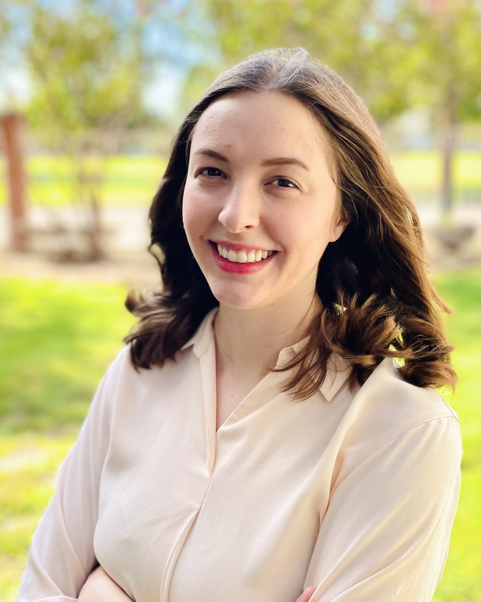

At A Glance
- Teacher of Record, Spanish at Baylor University
- Waco, TX
- Spanish (Bilingual), Mandarin Chinese (Intermediate)
Career Profile
Trilingual Spanish educator and linguist with higher-education teaching experience. Uses research-informed, student-centered instruction to support diverse learners. Brings cross-linguistic and multicultural perspectives through study of Spanish and Mandarin Chinese. Committed to inclusive pedagogy, community engagement, and meaningful collaboration with departmental colleagues as Teacher of Record, Spanish at Baylor University.
Education
- Baylor University, Waco, TX — Master of Arts in Spanish Linguistics, GPA 4.0, Dean's List (All Semesters), May 2026
- Baylor University, Waco, TX — Bachelor of Arts in Linguistics, GPA 3.94, Minors in Chinese and Music, Dean's List (All Semesters), May 2024
Experience
Baylor University, Department of Modern Languages and Cultures
Waco, Texas — Fall 2024 to Present
Teacher of Record, lecture and lab for SPA 1301: Elementary Spanish — Spring 2025 to Present
- Delivers weekly instruction to 40+ undergraduate students, applying a flipped-classroom approach and applied linguistics research to reduce foreign language anxiety, increase participation, and facilitate language acquisition
- Designs and implements assessments and analyzes outcomes to adjust instruction and differentiate learning pathways
- Integrates Canvas and VHL Central to structure coursework, manage communication, and support distance learning
Graduate Assistant for mentor Isabel Colorado — Fall 2024 to Spring 2025
- Contributed to instructional planning and facilitated class sessions to improve student learning outcomes
- Led 10 hours per week of conversation practice for Spanish learners of all levels, improving fluency and confidence
Research Assistant for Dr. Isabella Calafate, Waco Spanish Speakers Corpus Project — Spring 2025
- Conducted ethnographic interviews, anonymized transcripts, and analyzed audio data for a sociolinguistic corpus
- Presented findings to the research team, deepening understanding of Spanish-speaking communities in Central Texas
Baylor Center for Global Engagement, Study Abroad Office
Denia, Spain — Summer 2025
Support Staff
- Fostered an immersive, welcoming environment for language practice, promoting respectful intercultural learning
- Assisted instructional delivery for Intermediate Spanish 2310 and Medical Spanish 2320 through classroom support
- Collaborated with faculty and students to enhance academic engagement and support positive learning outcomes
La Puerta
Waco, TX — Fall 2024 to Spring 2025
Volunteer GED in Spanish Teaching Assistant and Co-Teacher
- Co-taught GED in Spanish for adult students using culturally responsive instruction to build academic confidence
- Collaborated with Baylor Spanish faculty to coordinate heritage Spanish students' participation in GED sessions, fostering community engagement and experiential learning
Baylor University, Department of English
Waco, Texas — Spring 2024
Research Assistant for Dr. Melisa Dracos
- Designed instructional activities promoting minority-language use during research sessions at La Vega Primary and conducted classroom observations to study dual-language instructional strategies
- Created visual stimuli within the design team and administered the Bilingual English-Spanish Assessment to collect data for research on irregular past-tense acquisition
- Presented research outcomes to Experiential Learning faculty, highlighting implications for bilingual pedagogy
Center for Writing Excellence
Waco, TX — Spring 2022 to Spring 2024
Undergraduate Writing Consultant
- Advised 7 to 10 students per week with clear and structured feedback in both in-person and online consultations
- Prepared written summaries after each consultation to support program documentation, tracking, and assessment
Tel Shimron Excavations
Shimron, Israel — Summer 2023
Dig Volunteer
- Collaborated with an international research team to document and preserve artifacts, applying attention to detail
Additional Qualifications
- Languages: Spanish (Bilingual), Mandarin Chinese (Intermediate), Portuguese (Novice High / Intermediate Low; strongest in reading and listening; 6 graduate hours completed)
- Technical Skills: MS Office, Google Workspace, Canvas LMS, Canva, VHL Central, Padlet, Hypothesis, Praat
- Awards: Outstanding Linguistics Academic Honor; Charles G. Smith (Spring 2024)
- Experience: Hola Cultura SPEL Copyediting Intern (Spring 2024); CITI Program in Social and Behavioral Research; Clinical and interpreter observations at Waco Family Medicine and Advanced Medical Spanish guest instruction
Contact
Waco, TX · (281) 682-3460